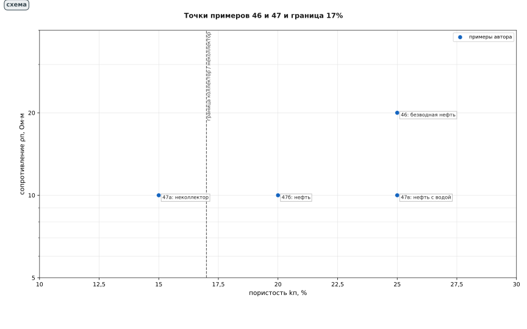

Путь › Нефть или вода: характер насыщения › Шаг 20 из 34
Палетка: точка пласта решает
В книге: «Оценка характера насыщения по графикам ρп = f(kп) (рис. 69)» стр. 97–98
Опирается на: шаг 19 «Сопротивление против пористости» (предпосылка, пример, переход к данным)
Суть
Насыщение пласта определяют, нанося его точку с координатами (ρп, kп) на поле графиков рис. 69.
Область, куда попала точка, и есть ответ: неколлектор, безводная нефть, нефть с водой или вода.
Одно и то же сопротивление при разной пористости даёт разные ответы, поэтому нужны обе координаты.
Пороговая идея. Насыщение определяют, нанося точку пласта на поле графиков: область, куда она попала (неколлектор, чистая нефть, нефть с водой, вода), и есть ответ. модель
Как это работает
Как устроен рис. 69
Рис. 69 — это палетка: набор заранее построенных кривых, на которые наносят точку пласта. По горизонтали — пористость kп, по вертикали — сопротивление ρп. Поле делится на неколлекторы (А) и коллекторы (Б) при граничной пористости 17%. стр. 97
«Поле зависимостей ρн = f (kн) разделяется здесь на области неколлекторов (А) и коллекторов (Б) при kн* = 17%.»
В области коллекторов лежит семейство кривых для разных значений относительного водонасыщения. Это водонасыщенность на шкале от 0 до 1. Значение 0 — предельно нефтегазонасыщенный коллектор, где есть только связанная вода, которая не вытесняется при притоке. Значение 1 — водоносный коллектор. стр. 98
«В области коллекторов расположено семейство графиков ρn = f(kn) для различных значений относительного водонасыщения пор»
«соответствует предельно нефтегазонасыщенному коллектору»
Промежуточные кривые получены статистической обработкой петрофизических исследований. Кривая 2 описывает полностью водоносные коллекторы и продолжается в область неколлекторов. С уменьшением пористости кривые предельно нефтенасыщенных и водоносных пластов сближаются и сливаются. стр. 98
«Промежуточные кривые для kn = const получены путем статистической обработки результатов петрофизических исследований.»
«для полностью водоносных коллекторов, которая продолжается и в области А для неколлекторов»
«графики 1 и 2 сближаются и сливаются в единый»
Области ответа
Кривые 3 ограничивают область двухфазного течения — когда в порах одновременно движутся нефть и вода. Между кривой предельного насыщения и первой кривой 3 — коллекторы с безводной нефтью (газом). Между двумя кривыми 3 — нефть с водой. Ниже — непродуктивные коллекторы. стр. 98
«Эти графики ограничивают область двухфазного течения жидкости в порах коллекторов»
«область коллекторов, из которых может быть получена нефть (газ) с водой, - кривыми ρn* и ρn**»
Как пользоваться
Характер насыщения определяют так. Точку с координатами ρп и kп пласта наносят на графики рис. 69. Автор делает вывод: область, в которой окажется точка, и определяет характер насыщения. стр. 98
«при этом область, в которой окажется точка, определяет характер насыщения распознаваемого пласта»
Примеры автора
Пример 46: пласт с ρп = 20 Ом·м и kп = 25 % при испытании даст безводную нефть. Пример 47: порода с ρп = 10 Ом·м. При пористости 15% это неколлектор, при 20% — нефтеносный коллектор, при 25 % — коллектор, который даст нефть с водой. стр. 98
«для которого ρn = 20 Ом·м, kn = 25 %. Построив точку с указанными координатами, определяем, что коллектор даст при испытании безводную нефть.»
«Ответ: а) неколлектор; б) коллектор нефтеносный; в) коллектор, который при испытании даст нефть с водой.»

Практика
Для ускорения графики используют со шкалами показаний методов пористости вместо шкалы пористости. Например, со шкалами ΔJнт или ΔТ. Нормализация диаграмм основана на тех же эффектах и не требует построения графиков. Её автор разбирает в разделе о карбонатных коллекторах. стр. 98
«могут быть использованы со шкалами ΔJm, ΔT, δn или ΔJno, а также ρno вместо шкалы пористости»
«разбираются ниже в разделе, посвященном карбонатным коллекторам»
Нюанс: палетка только для своего объекта
Это допущение автора: кривые 3 построены для конкретного геологического объекта. Их получают совместным анализом петрофизических зависимостей для всех классов коллекторов этого объекта. Значит, на другом объекте области смещаются, и палетку переносить нельзя. стр. 98
«для исследуемого геологического объекта, представленного совокупностью всех классов коллекторов и неколлекторами»
По шагам
Как определить насыщение по рис. 69
- Определите для пласта сопротивление ρп и пористость kп. стр. 98
- Нанесите точку с этими координатами на графики рис. 69. стр. 98
- По области точки определите ответ: неколлектор, безводная нефть, нефть с водой или вода. стр. 98
Разбор примеров из книги
Пример 46. Характер насыщения по точке на палетке стр. 98
Условие. Нефтяное месторождение; для коллектора ρп = 20 Ом·м, kп = 25 %. Определить характер насыщения.
- Построить на графиках рис. 69 точку с координатами ρп = 20 Ом·м и kп = 25 %.
- Определить, в какую область попала точка.
Итог. Коллектор при испытании даст безводную нефть.
Пример 47. Одно сопротивление — разные ответы стр. 98
Условие. Порода имеет ρп = 10 Ом·м при пористости а) 15%; б) 20%; в) 25 %. Установить, чем она представлена.
- Для каждой пористости нанести точку с ρп = 10 Ом·м на графики рис. 69.
- Определить область для каждой точки.
Итог. а) неколлектор; б) коллектор нефтеносный; в) коллектор, который при испытании даст нефть с водой.
Решение на данных
Что даст пласт при испытании?
- Сопротивление пласта ρп
- Пористость пласта kп
Нанести точку (ρп, kп) на рис. 69; область точки определяет характер насыщения. стр. 97–98
Неколлектор, безводная нефть, нефть с водой или вода.
Потренируйтесь
Дано: ρп = 20 Ом·м, kп = 25 % (Пример 46, стр. 98)
Точка попадает в область безводной нефти.
Дано: ρп = 10 Ом·м, kп = 15% (Пример 47а, стр. 98)
Пористость ниже граничной 17%: область неколлекторов.
Дано: ρп = 10 Ом·м, kп = 20% (Пример 47б, стр. 98)
Ответ автора в примере 47б.
Дано: ρп = 10 Ом·м, kп = 25 % (Пример 47в, стр. 98)
Ответ автора в примере 47в: то же сопротивление при большей пористости — уже нефть с водой.
Цифры и условия
- Граница неколлектор / коллектор на рис. 69 — пористость 17%. стр. 97
- Относительное водонасыщение: 0 — только связанная вода, 1 — водоносный пласт. стр. 98
- Условие: палетка верна только для объекта, по данным которого построена. стр. 98
Формулы
Относительное водонасыщение пор (обозначения в тексте искажены распознаванием; восстановлено по смыслу) стр. 98
| Обозначение | Что это | Единицы |
|---|---|---|
| $k_в$ | коэффициент водонасыщения | — |
| $k_{в.св}$ | коэффициент связанной воды | — |
Частая ошибка модель
Ошибка: Высокое сопротивление всегда означает нефть.
На самом деле: Одно и то же сопротивление (10 Ом·м) в зависимости от пористости означает неколлектор, нефтеносный коллектор или нефть с водой (пример 47). стр. 98
Что это значит для данных модель
Палетка — готовый классификатор с областями решений в координатах (пористость, сопротивление); пример 47 показывает, что без второй координаты решение неверно.
- Вход
- ρп и kп пласта (или показания методов пористости)
- Выход
- класс: неколлектор / безводная нефть / нефть с водой / вода
- Где ломается
- Палетка построена статистически для конкретного объекта и классов коллекторов; на другом объекте области смещаются.
- гипотеза Пример 47 — готовый тест для модели насыщения: одинаковое сопротивление при разной пористости должно давать разные классы.
Где здесь ручной труд специалиста
- Входные данные
- ρп, kп пластов, палетка объекта
- Ручные шаги
- нанесение каждой точки на график, определение области
- Точки суждения
- точки у границ областей
- Время
- по точке на каждый пласт
- Типичные ошибки
- использовать палетку другого объекта
Аналогия модель
Диаграмма областей решений (decision regions) классификатора в двумерном пространстве признаков.
Где аналогия перестаёт работать: Границы областей построены по петрофизике одного объекта; это не универсальная обученная модель.
Как это делается сейчас модель
Ручное нанесение точек на палетку сегодня заменено расчётом в программах интерпретации, но логика областей и граничных кривых сохраняется.
Глубже
Относительное водонасыщение модель
Формула приводит водонасыщенность к шкале от 0 до 1, где 0 — только связанная вода, 1 — полностью водоносный пласт. Это позволяет сравнивать пласты с разной связанной водой.
Рисунки книги к этому шагу
- Рис. 69. Рис.69. Кривые зависимости ρn = f(kn), используемые для оценки продуктивности коллекторов. Шифр кривых – kn; цифры в кружках: 1 – ρnmax = f(kn); 2 – ρno = f(kn); 3 – ρn* = f(kn) и ρn** = f(kn); 4 – граница «коллектор - неколлектор», соответствующая kn,cp; I – область безводной нефти; II – двухфазная область нефти с водой; III – область воды; IV – кривые ρn = f(kn) для коллекторов с разной глинистостью. стр. 98
Новые понятия
- палетка (interpretation chart)
- Набор заранее построенных кривых, на которые наносят точку, чтобы графически получить ответ. стр. 98 модель
- относительное водонасыщение (normalized water saturation)
- Водонасыщенность, приведённая к шкале от 0 (только связанная вода) до 1 (полностью водоносный пласт). стр. 98
- связанная вода (irreducible water)
- Вода, удерживаемая в порах и не вытесняемая при притоке. стр. 98 модель
- двухфазное течение (two-phase flow)
- Одновременное движение в порах двух флюидов (нефти и воды). стр. 98 модель
- безводная нефть (water-free oil)
- Приток нефти без воды. стр. 98 модель
Проверь себя
%
Верный ответ: 17 %
Автор указывает границу областей А и Б при пористости 17%. Где это в тексте (стр. 97) →
Вставьте пропущенные слова (пример 47, ρп = 10 Ом·м).
При пористости 15% это , при 20% — нефтеносный коллектор, при 25 % — коллектор, который даст нефть с .
Верный ответ: При пористости 15% это [неколлектор], при 20% — нефтеносный коллектор, при 25 % — коллектор, который даст нефть с [водой].
Одно и то же сопротивление при разной пористости означает разное: поэтому нужны обе координаты. Где это в тексте (стр. 98) →
Верный ответ: Нет: кривые построены для конкретного объекта
Кривые 3 построены по петрофизике конкретного объекта, на другом объекте области смещаются. Где это в тексте (стр. 98) →
Источник
Все утверждения шага с дословной цитатой автора и страницей книги (по PDF).
На рис. 69 поле ρп = f(kп) делится на неколлекторы (А) и коллекторы (Б) при граничной пористости 17%. наблюдение
«Поле зависимостей ρн = f (kн) разделяется здесь на области неколлекторов (А) и коллекторов (Б) при kн* = 17%.»
В области коллекторов — семейство кривых для разных значений относительного водонасыщения. наблюдение
«В области коллекторов расположено семейство графиков ρn = f(kn) для различных значений относительного водонасыщения пор»
Значение 0 — предельно нефтегазонасыщенный коллектор, 1 — водоносный. наблюдение
«соответствует предельно нефтегазонасыщенному коллектору»
Промежуточные кривые получены статистической обработкой петрофизических исследований. наблюдение
«Промежуточные кривые для kn = const получены путем статистической обработки результатов петрофизических исследований.»
Кривая 2 — полностью водоносные коллекторы; она продолжается в область неколлекторов. наблюдение
«для полностью водоносных коллекторов, которая продолжается и в области А для неколлекторов»
С уменьшением пористости кривые предельно нефтенасыщенных и водоносных сближаются и сливаются. наблюдение
«графики 1 и 2 сближаются и сливаются в единый»
Кривые 3 ограничивают область двухфазного течения. наблюдение
«Эти графики ограничивают область двухфазного течения жидкости в порах коллекторов»
Области: чистая нефть, нефть с водой, непродуктивные коллекторы — между соответствующими кривыми. вывод
«область коллекторов, из которых может быть получена нефть (газ) с водой, - кривыми ρn* и ρn**»
Кривые 3 построены для конкретного объекта по совокупности петрофизических зависимостей. допущение
«для исследуемого геологического объекта, представленного совокупностью всех классов коллекторов и неколлекторами»
Насыщение определяют по области, в которую попадает точка (ρп, kп). вывод
«при этом область, в которой окажется точка, определяет характер насыщения распознаваемого пласта»
Пример 46: ρп = 20 Ом·м, kп = 25 % — коллектор даст безводную нефть. наблюдение
«для которого ρn = 20 Ом·м, kn = 25 %. Построив точку с указанными координатами, определяем, что коллектор даст при испытании безводную нефть.»
Пример 47: при ρп = 10 Ом·м и пористости 15%, 20%, 25 % — неколлектор, нефтеносный коллектор, нефть с водой. наблюдение
«Ответ: а) неколлектор; б) коллектор нефтеносный; в) коллектор, который при испытании даст нефть с водой.»
Для ускорения графики можно использовать со шкалами методов пористости вместо пористости. наблюдение
«могут быть использованы со шкалами ΔJm, ΔT, δn или ΔJno, а также ρno вместо шкалы пористости»
Нормализация диаграмм основана на тех же эффектах, разобрана в разделе о карбонатных коллекторах. наблюдение
«разбираются ниже в разделе, посвященном карбонатным коллекторам»
На этот шаг опираются: шаг 21 «Два вида критических значений».